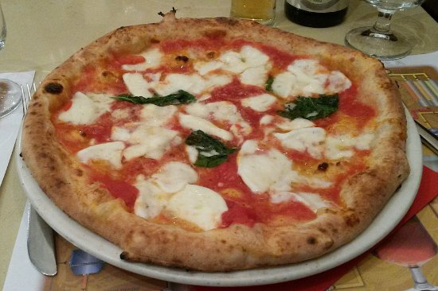

Naples
A city full of colors
Find out more about Naples
-
Piazza del Plebiscito
It is named after the plebiscite taken on October 2, 1860 that brought Naples into the unified Kingdom of Italy under the House of Savoy. In the first years of the 19th century, the King of Naples, Murat (Napoleon's brother-in-law), planned the square and building as a tribute to the emperor. Soon after Napoleon was finally dispatched to St Helena, the Bourbons were restored to the throne, and Ferdinand I continued the construction but converted the finished product into the church one sees today. -
Castel dell'Ovo
Built by the Normans in the 12th century, Naples’ oldest castle owes its name (Castle of the Egg) to Virgil. The Roman scribe reputedly buried an egg on the site where the castle now stands, warning that when the egg breaks, the castle (and Naples) will fall. Thankfully, both are still standing, and walking up to the castle's ramparts will reward you with a breathtaking panorama.
-
Via San Gregorio Armeno
Via San Gregorio Armeno is one of the most amazing attractions in Naples. In the pedestrian road in the historic city of Naples, you can admire numerous shops with creative nativity scenes and figurines in all variations. Besides the Jesus- and Madonna figurines you will also find detailed copies of pizzerias, fruit markets, all household objects, gastronomic delights, exotic animals, and sometimes even caricatured politicians and football players. -
Pizza Margherita
Naples is traditionally credited as the home of pizza. This originated as a meal of the poor, but under Ferdinand IV it became popular among the upper classes: famously, the Margherita pizza was named after Queen Margherita of Savoy after her visit to the city. Cooked traditionally in a wood-burning oven, the ingredients of Neapolitan pizza have been strictly regulated by law since 2004, and must include wheat flour type "00" with the addition of flour type "0" yeast, natural mineral water, peeled tomatoes or fresh cherry tomatoes, mozzarella cheese, sea salt and extra virgin olive oil